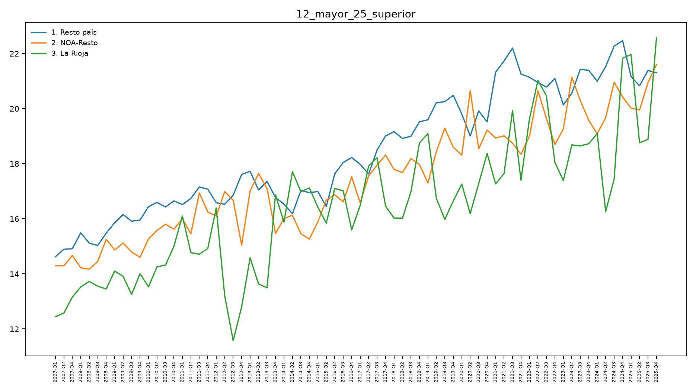
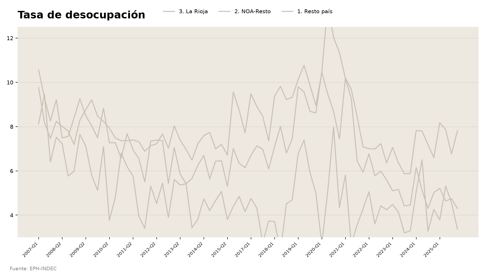

Práctica - Clase 3
Duración: ~14 minutos en clase (el resto del material queda para hacer en casa; falta una tercera parte — ver nota al final). En parejas de perfiles mezclados.
El foco de esta práctica es leer, no escribir. Las
partes de acá abajo no piden completar código: piden mirar un gráfico y
decir qué está bien o mal, o leer un fragmento de ggplot2 y
predecir qué dibuja antes de correrlo. Completar código (los
______ de siempre) queda como refuerzo opcional para hacer
en casa, al final de esta página.
Parte 1 · Lectura de gráficos (los dos, ~8’)
1a. Antes / después — el gráfico de líneas (4’)
Es el mismo dato que usa el monitor (% de personas +25 con estudios superiores, por región), pero dibujado sin ninguna de las decisiones de la clase 1. No mires todavía el código ni el gráfico real.

Contestá primero, solo mirando la imagen:
- ¿Qué mide este gráfico? ¿Qué representa cada línea?
- Nombrá al menos tres cosas que dificultan leerlo.
- El título dice
12_mayor_25_superior. ¿Ayuda a entender el hallazgo? ¿Por qué sí o no?
Ahora sí: abrí outputs/plots/12_educ.png (la versión
real del monitor, mismo dato) y compará. Para cada problema que
nombraste en la pregunta 2, decí qué decisión del código lo
resuelve — no hace falta escribir la línea exacta, alcanza con
nombrarla:
| Lo que viste mal en el “antes” | La decisión que lo arregla |
|---|---|
| Eje X con 76 etiquetas superpuestas | ¿…? |
| El eje Y no arranca en cero | ¿…? |
| Las tres líneas pesan igual, ninguna salta | ¿…? |
| El título es el nombre de una variable | ¿…? |
Si querés confirmar tus respuestas viendo el código real:
ejercicios/01_lineas_educacion.R (queda de refuerzo
opcional, ver el final de esta página).
1b. Errores plantados — la tasa de desocupación (4’)
Alguien lo armó para publicar, con la paleta y el estilo del monitor — pero tiene dos errores de integridad visual metidos a propósito (de los que vimos en la clase 2 y en el Bloque A de hoy). Encontralos sin mirar el original todavía.

- Miren el eje Y. ¿Dónde arranca? ¿Qué efecto tiene eso sobre cómo se lee la caída de la desocupación a lo largo de la serie?
- Traten de seguir la línea de La Rioja de punta a punta. ¿Se puede? ¿Por qué no?
- Si tuvieran que pedir el arreglo en una revisión de código, ¿qué le
dirían a quien lo hizo? (alcanza con nombrar la función o la decisión
que falta —
ylim(), unfactor(), una paleta — no hace falta escribir el código completo)
Ahora comparen con el original:
outputs/plots/04_desoc.png. ¿Encontraron los dos errores, o
se les pasó alguno? El código real que sí lo hace bien está en
src/04_desoc.R.
Nota para quien dicta: los errores plantados son (1) el eje Y recortado — va de 3 a 12, cuando el real arranca en 0 y llega a ~21, así que además recorta el pico de 2020 — y (2) las tres regiones en el mismo color pálido, con La Rioja dibujada primero y por lo tanto tapada donde las líneas se cruzan.
Parte 2 · Predicción: leer código sin correrlo (los dos, ~6’)
Estas cuatro tarjetas son variaciones del bump chart de PBG per
cápita (ejercicios/02_bump_pbg.R). No hace falta
correr nada. Para cada una: escribí o decí en voz alta qué
esperás que cambie en el gráfico, antes de leer la
respuesta.
Tarjeta 1
rank_df <- prov %>%
group_by(anio) %>%
mutate(ranking = min_rank(desc(pbg_per_capita))) %>%
ungroup()Predicción: si borráramos estas tres líneas y
graficáramos pbg_per_capita directo (sin pasar por
ranking), ¿qué eje Y tendría el gráfico? ¿Serviría igual
para responder “en qué puesto está La Rioja”?
Respuesta
El eje Y pasaría a ser el valor en pesos, no un puesto del 1 al 24. Se podría ver el nivel del PBG per cápita de La Rioja en el tiempo, pero no si mejoró o empeoró relativo a las demás — que es la pregunta que responde un bump chart.
Tarjeta 2
ggplot(rank_df, aes(x = anio, y = ranking, group = provincia)) +
geom_line()Predicción: ¿en qué puesto del eje Y aparece dibujada la provincia con el PBG per cápita más alto de cada año?
Respuesta
Sin scale_y_reverse(), ggplot dibuja el eje
Y de forma creciente hacia arriba: el puesto 1 (el más alto) queda
abajo. La lectura sale al revés de lo que espera el ojo
— “subir en el ranking” se ve como bajar en el gráfico.
Tarjeta 3
ggplot(rank_df, aes(x = anio, y = ranking, group = la_rioja_region, color = la_rioja_region)) +
geom_line()Predicción: ¿cuántas líneas hay dibujadas en este
gráfico? (Pista: hay 24 provincias y 3 valores posibles de
la_rioja_region.)
Respuesta
Solo 3 líneas, una por región — porque
group agrupa las filas que se conectan en una misma línea,
y acá se agrupó por región en vez de por provincia. Las 24 trayectorias
individuales se pierden; lo que se ve es un promedio o una mezcla rara
de las provincias de cada región. El group correcto es
provincia (24 líneas); el color sí puede ser
la_rioja_region (3 colores).
Tarjeta 4
ggplot(rank_df, aes(x = anio, y = ranking, group = provincia, color = la_rioja_region)) +
geom_line(linewidth = 0.6)Predicción: con las 24 líneas del mismo grosor, ¿se puede identificar de un vistazo cuál es la de La Rioja?
Respuesta
Se puede si el color de “3. La Rioja” contrasta fuerte con el resto
(la paleta del proyecto ya ayuda), pero con las 21 provincias de
contexto todas del mismo grosor, el gráfico sigue siendo denso. Por eso
el bump real suma scale_linewidth_manual(): contexto fino,
La Rioja gruesa — el patrón figura/fondo no depende solo del color.
Parte 3 · (pendiente)
Nota para quien dicta: el simulacro de actualización que iba acá (agregar una fila ficticia a un CSV, correr un script, revertir con
git checkout) se sacó de la práctica. Falta una Parte 3 de reemplazo — conceptual sobre el pipeline, sin correr R en vivo — para completar los ~18’ de práctica en clase.
Para la puesta en común
- Los dos errores de la Parte 1b: ¿los encontraron los dos integrantes de la pareja, o cada uno vio uno distinto?
- Alguna predicción de la Parte 2 que les haya salido al revés de lo que esperaban — ¿por qué falló la intuición?
- Si llegaron al rastreo del pipeline (más abajo): en qué eslabón se les hizo menos obvio de dónde salía el número.
Material para seguir en casa (opcional)
Rastreo completo del pipeline
La versión larga del “de dónde sale este número”, con rastreo guiado,
diagrama a mano y auditoría del CSV sin microdatos:
ejercicios/02_rastreo_pipeline.R (~35’ si
lo hacés completo — B1 rastreo, B2 diagrama, B3 auditoría). Elegí como
punto de partida cualquiera de los CSV que vieron hoy
(04_tasa_desoc.csv de la Parte 1b es un buen candidato) y
seguile el rastro hasta la fuente cruda. Solución:
soluciones/02_rastreo_respuestas.md.
Practicar la sintaxis de ggplot2 (fill-in-the-blank)
Para quien quiera reforzar completando código de verdad, ahora con el contexto de lo que ya interpretaron en las Partes 1 y 2:
ejercicios/01_lineas_educacion.R— reconstruyesrc/12_educ.Rsobre12_mayor_25_superior.csv, el mismo dato de la Parte 1a. Solución:soluciones/01_lineas_educacion.R.ejercicios/02_bump_pbg.R— la versión completa (con código real, no solo predicción) del bump chart de la Parte 2. Solución:soluciones/02_bump_pbg.R. > ⚠️ Al día de hoydata/inputs_md/15_pbg_per_capita_por_provincia.csv(el CSV que lee este > ejercicio) todavía no está en el repo — avisale a quien dicta la clase antes de intentar > correrlo.
Agregar un indicador nuevo de punta a punta
El recorrido completo del circuito —calcular un indicador que hoy no
existe, graficarlo y abrir el PR— está en el practica.Rmd,
sección “Variante avanzada”. El indicador es la tasa de
actividad (PEA sobre población total), derivable de dos CSV ya
versionados.